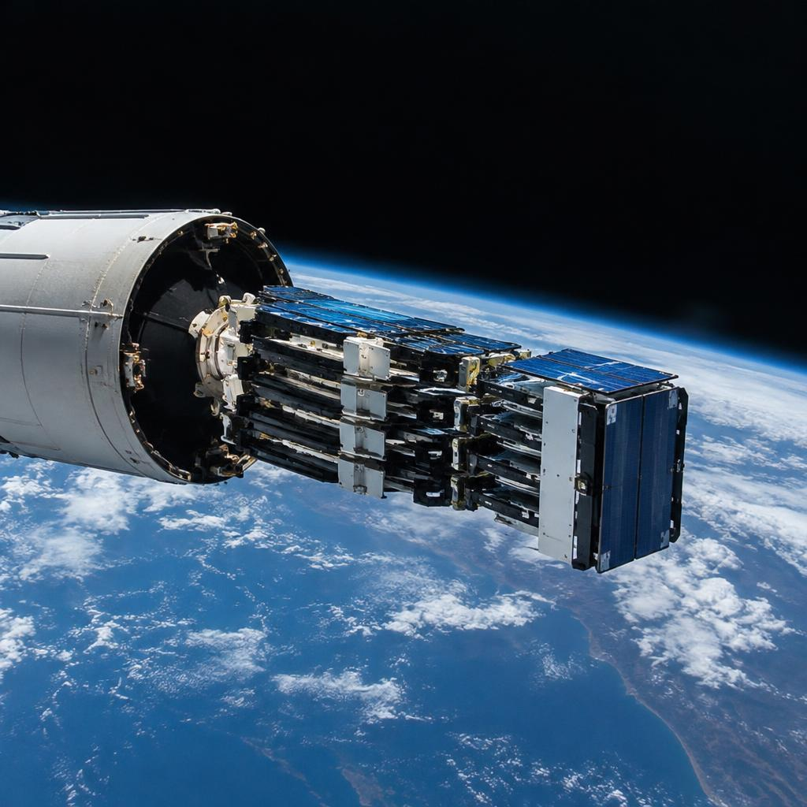

Launch · Mission 27
Asteria-7
OrbitX Heavy carrying sixty satellites at once — the most engines ever lit on a single OrbitX pad, and the mission that made rideshare affordable.

Why three cores instead of one bigger rocket
OrbitX Heavy is three OrbitX One first stages bolted together, with a second stage on top: 27 engines firing side by side at liftoff. Building three copies of a proven booster is cheaper and safer than inventing one giant new one — every engine, tank and turbopump is hardware the fleet has already flown, just in triplicate.
The trick is that the three cores are not interchangeable during flight. The two side boosters burn hardest and shut down first at T+2:20, so they run out of propellant while the centre core is still full. That stagger is deliberate: it lets the side boosters peel away and fly home while the centre core keeps pushing the payload with a nearly full tank.

The customer isn't one customer — it's sixty
Asteria-7 was a rideshare mission: sixty different organisations — universities, weather startups, an imaging constellation, three government labs — each bought a slot in one fairing. A small satellite that would once have needed its own $60 million rocket now flies for the price of its own mass, because one launch's fixed costs are shared sixty ways.
Before flight, every satellite was mounted to a stack of stacking plates inside the fairing — the clamshell nose cone that protects payloads from wind, rain and acoustic shock. The fairing is jettisoned at about T+3:30, once the air is thin enough that nothing needs protecting; from there on, the satellites ride exposed to space.

Two boosters home, one still flying
At T+2:20 the side boosters separated and flew a symmetrical ballet: both flipped, both ran boostback burns toward the coast, and both landed on their pads 40 seconds apart. Two boosters, recovered on the same evening, from one mission — that double recovery is what makes the Heavy's economics work.
The centre core had a harder job. Still carrying most of the acceleration, it separated at T+3:52 too far downrange to fly back, so it targeted the droneship “Of Course We Still Fly” parked 640 km down the flight path. Landing on a ship in open water means aiming at a deck that rises and falls with the swell — the booster’s landing burn compensates in real time.

T+58:00 — the dispenser starts dealing cards
Deploying sixty satellites is a schedule, not an event. The stack sits in a dispenser that releases them one at a time, top plate then bottom plate, each pushed away by a spring at 30 cm per second. Releases were spaced about 30 seconds apart so that no two satellites ended up on colliding paths — they separate along the direction of travel, and the tiny speed difference means their orbits drift apart forever.
Two of the sixty were intentionally deployed late, an orbit lower, to serve as calibration targets for the others' radios. Every release was confirmed by telemetry before the next one fired; a dispenser that blind-fires sixty payloads is a dispenser that loses sixty payloads.

What the mission proved
Asteria-7 delivered all sixty payloads into a 540 km orbit with a spread of just 9 km between first and last — tight enough that every customer's satellite reached its operational altitude without spending fuel on corrections. Fuel is lifetime: every kilogram of propellant a satellite saves on orbit correction is months of extra service at the end of its life.
Both side boosters flew again within five weeks. The centre core flew again four months later after its droneship landing — the first time an OrbitX Heavy centre core was reflown, and the moment rideshare stopped being a discount option and became the default way to reach orbit.